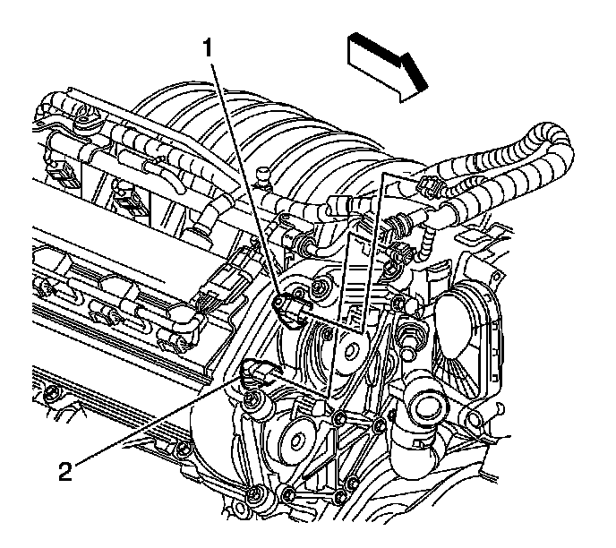
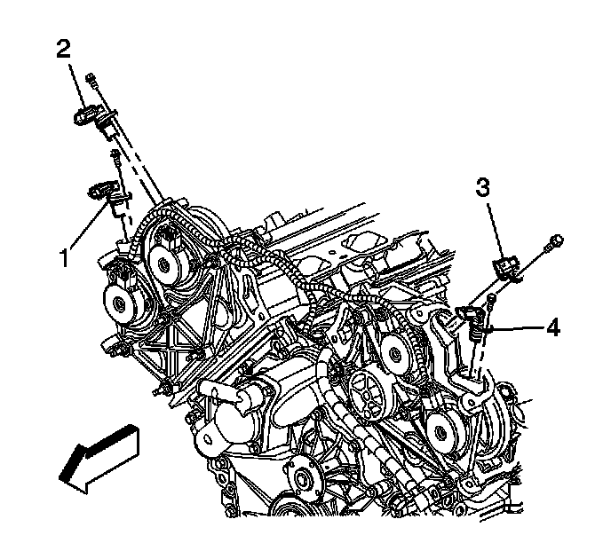

Camshaft Position Sensor Replacement - Bank 1 (Right Side) Intake
Camshaft Position Sensor Replacement - Bank 1 (Right Side) Intake
Removal Procedure

1. Remove the fuel injector sight shield. Refer to Fuel Injector Sight Shield Replacement (Service and Repair) .
Important: When disconnecting more than one sensor, mark the connectors to ensure correct re-installation. The electrical connectors are physically interchangeable, however, they must be installed to the correct sensor.
2. Disconnect the electrical connector from the right bank intake camshaft position sensor (1).

3. Remove the camshaft sensor retaining bolt.
4. Remove the right bank intake camshaft sensor (2).
Installation Procedure
Important: Inspect the camshaft sensor O-ring for wear or damage. If a problem is found, replace the O-ring.
1. Lubricate the camshaft sensor O-ring with engine oil.
Notice: Refer to Fastener Notice (Fastener Notice) .
2. Install the right bank intake camshaft position sensor (2) and retaining bolt.
Tighten the retaining bolt to 10 N.m (89 lb in).
3. Reconnect the camshaft sensor electrical connector (1).
4. Install the fuel injector sight shield. Refer to Fuel Injector Sight Shield Replacement (Service and Repair) .
5. Operate the engine and inspect the camshaft sensor for engine oil leaks.